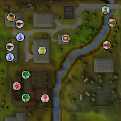
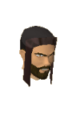
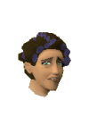
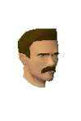
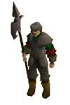

Edgeville
Warning | Introduction | Location | Points of Interest | Personalities
Quests | On the Edge of the Wilderness | Miscellaneous
Quests | On the Edge of the Wilderness | Miscellaneous
Warning
Just north of Edgeville is the Wilderness, a lawless place where monsters lurk and vicious spirits of the long-dead can rise up without warning. If you intend to go into the Wilderness you should be aware that you will probably be attacked by a number of monsters, so it is best to take only items you are willing to lose.
Also be aware that some players may try to lure you into the Wilderness in order to get you killed by the many aggressive monsters, so be on your guard and make sure you're watching your screen if you are in Edgeville.
Introduction

The town itself is very small by any standards, but it is a rather convenient members' transport hub in the lands of RuneScape. Amulets of Glory will quickly deposit players at the bank, who may then choose to travel onwards using the canoe point across the river, or, if they have completed Fairy Tale II - Cure a Queen, by making use of the oh-so-convenient fairy rings.
Location

To the west of the town is the Monastery, where injured adventurers will find monks willing to heal them - a useful service for those who went into the Wilderness without being properly prepared. With the construction of the ditch to prevent the incursion of Wilderness monsters, a safe path to the Monastery has been created for adventurers and residents of Edgeville alike.
Points of Interest

Aside from this, there is Oziach, who makes runite platebodies, green dragonhide body armour and can smith the draconic visage onto anti-dragonbreath shields for a fee. Members will find the Mage of Zamorak to the north of town, just inside the Wilderness, who will teleport them to the Abyss provided they have given him some assistance...
Of course, no description of Edgeville would be complete without mentioning the vault of extreme evil and DOOM that lies beneath it, open for any member to see. Yes, Edgeville is home to Evil Dave, possibly the most wicked and evil human to roam RuneScape - his cruelty only matched by his reluctance to do anything actually evil.
Also beneath the town, and possibly almost as evil as Evil Dave's Basement of DOOM, are the depths of Edgeville Dungeon.
Personalities
|

Evil Dave has always been different from other boys. When he built a treehouse it was his Tower of Fear; when he went to play in Edgeville Dungeon it was not to be a hero, but to be a monster; and now he lives in his mother's basement, the BASEMENT OF DOOM! He has been working on summoning legions of demons and the undead, but has so far only managed to afflict his basement with a plague of hell rats, who are more sulphurous than evil.
|

Doris is Evil Dave's mother, and though she wishes her son would move out and find a place of his own, she's still perfectly happy making his stew. She used to live in Lumbridge, where her life was decidedly miserable, being attacked or pickpocketed by adventurers whenever they felt like it (and, in Lumbridge, that was most of the time).
|
|
| Terrified members can find Evil Dave in the BASEMENT OF DOOM under his mother's house. | Members can find Doris in her house in the west of town. |
|

Oziach is an armourer of great skill, but he dislikes the idea that just anyone could buy his wares. As a result, he only allows heroes who have proven themselves worthy to buy his goods. Because of his location close to the Wilderness, though, there are many who would gladly do so.
|
![[image]](../../img/main/kbase/npc/area_guides/chathead/mandrith.gif) This towering figure is descended from the first of the clans of men, whose legends speak of the first murder on RuneScape. For this crime, his people have been cursed to an eternity watching over those who would do the same. Given his impressive clothes, his booming voice and his remarkable size, it is little wonder that he commands respect.
|
|
| Oziach can be found in his house in the north-west of town. | Mandrith loiters menacingly in the Edgeville bank on PvP and Bounty Worlds. |
Quests
There are no quests to start in Edgeville.
On the Edge of the Wilderness
|

The guards of Edgeville wander the area just south of the Wilderness, keeping an eye out for any dangerous beasts attempting to enter Misthalin. They are not great fighters, though, so it is a good thing that so many adventurers are usually nearby, who would be more than willing to deal with whatever comes their way.
|

Skeletons are a common sight in the lower regions of the Wilderness. Their bones are held together by the dark magic that permeates the area, making them come to life and attack anyone that tries to go past. They are not very dangerous to those who expect to go into the Wilderness.
|
|
| Guards can be found in the north of the town. | Skeletons can be found north of town. |
Miscellaneous
- There is a trail of coins north of the town which, if you think it's worthwhile risking your life to collect a handful of gold, you might follow to see where it leads.
- There is a pair of leather gloves just south of the bank.
- The Mausoleum in the south of the town conceals the entry to the Edgeville Dungeon, as well as having a small garden in which yew trees and nettles can be found growing.
- In the guards' building, in the north-east of town, is an iron mace.
- If you intend to wander into the Wilderness to play Clan Wars with some friends, it's probably worth buying a Wilderness cape to easily identify who is on your side. Richard is a cape seller located just north of the town.
- Hari lives by the river east of Edgeville and will show you how to make a canoe that leads through an underground tunnel deep into the Wilderness (this is strictly a one-way journey, you will need to find alternative transport back out of the Wilderness), or you can use the canoe to head south to more pleasant lands.
- If you would like to upgrade your kitten or cat to a hellkitten or hellcat, you might like to start the Evil Dave subquest of Recipe for Disaster and hunt the hellrats in the BASEMENT OF DOOM.

More articles in
Cities and Towns
|
|